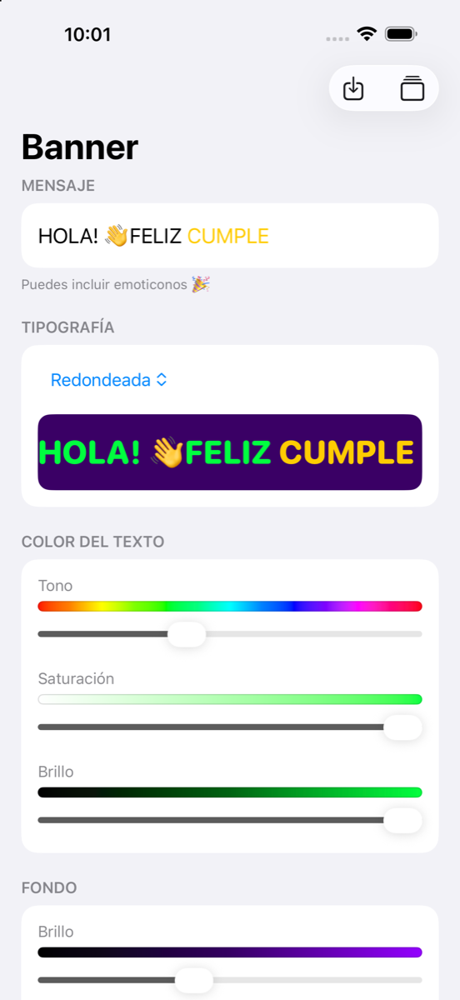
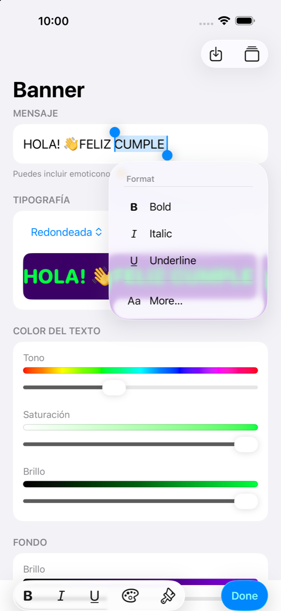
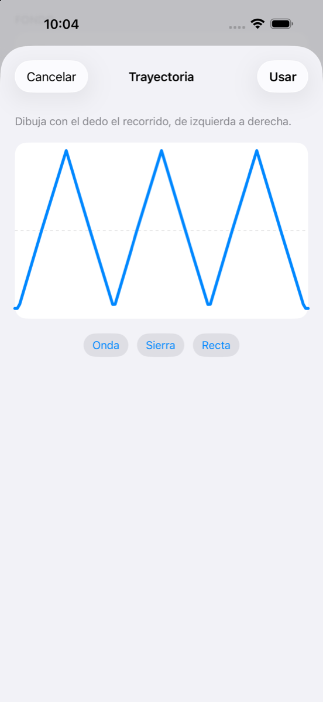
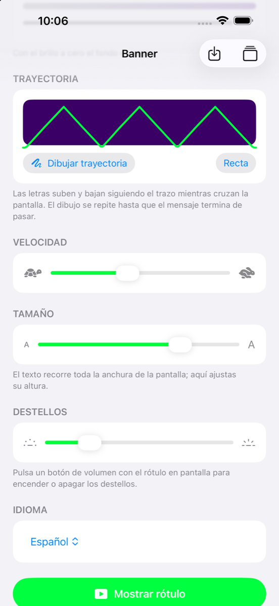
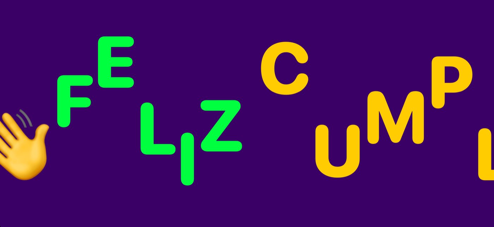
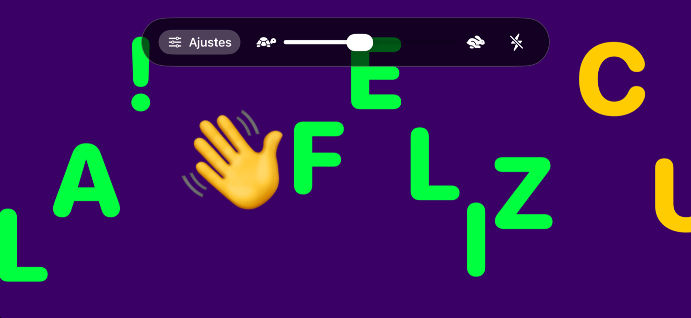
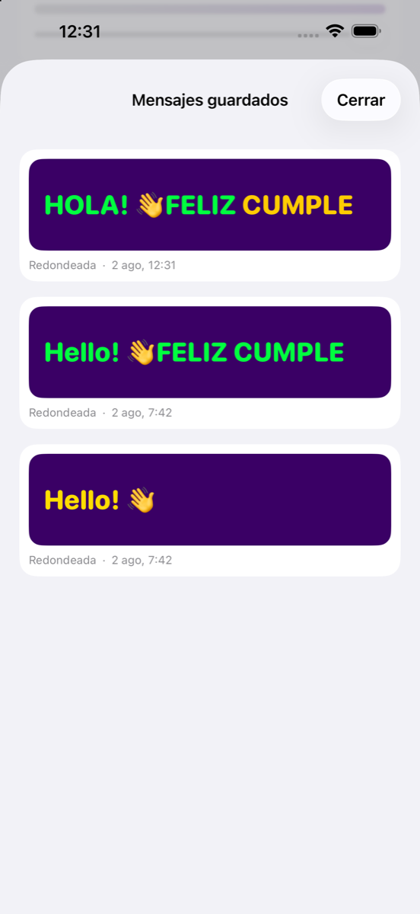

Escribe un mensaje, dale color, tipografía y movimiento, y la pantalla se
convierte en un rótulo que desfila en apaisado. Este manual recorre la app
pantalla por pantalla: cómo se prepara el mensaje, cómo se controla el rótulo
mientras corre, cómo se guardan mensajes para reutilizarlos y cómo se proyecta
en un televisor.
Versión 1.0 · Agosto de 2026
Contenido
La pantalla de ajustes — mensaje, tipografía, colores, trayectoria, velocidad, tamaño, destellos e idioma
El rótulo en marcha — apaisado, barra de control y salida
Mensajes guardados — guardar, cargar y borrar
Proyectar en un televisor o un monitor — AirPlay y cable
Detalles que conviene saber — contraste, emoticonos, colores y batería
Resumen de gestos y controles
1. La pantalla de ajustes
Es donde se prepara todo. Se recorre de arriba abajo y cada bloque cambia una
cosa; el resultado se ve al momento en la vista previa, el
rectángulo con el fondo y los colores reales que hay bajo Tipografía.

Mensaje, tipografía y color del texto. La vista previa muestra el
aspecto exacto que tendrá el rótulo.
Mensaje
El campo admite cualquier texto, emoticonos incluidos. Puede ocupar varias
líneas mientras escribes; en el rótulo saldrá todo seguido en una sola.
Para dar formato a un trozo, selecciónalo —toca dos veces una
palabra, o toca y elige Seleccionar— y usa cualquiera de los dos caminos:
El menú que aparece sobre la selección: Formato →
Negrita, Cursiva, Subrayado. Si no lo ves,
toca antes la flecha ›.
La barra que sale sobre el teclado: B,
I y U para los mismos rasgos, la
paleta para dar color al trozo seleccionado y la
brocha para quitárselo y devolverlo al color general.
Hecho cierra el teclado.

El menú Formato con «CUMPLE» seleccionado. Abajo, la barra
del teclado con la paleta de color.
Combinando ambas cosas se consiguen varios colores en un mismo
mensaje: en el ejemplo, «HOLA! FELIZ» en verde y «CUMPLE» en amarillo.
La negrita se nota poco. El rótulo ya se dibuja
con un trazo muy grueso y la negrita solo puede subir al más grueso disponible.
La cursiva y el color, en cambio, se ven a distancia.
Tipografía
Catorce tipos: cuatro del sistema —Redondeada, Sistema,
Con remates y Monoespaciada— y diez familias clásicas de iOS:
Avenir Next, Futura, Georgia, Helvetica Neue, American Typewriter, Copperplate,
Chalkboard, Marker Felt, Snell Roundhand y Party.
Color del texto y Fondo
Dos bloques con los mismos tres deslizadores: Tono,
Saturación y Brillo. El color del texto se aplica
a todo el mensaje salvo a los trozos que tengan color propio, que mandan sobre él.
En el fondo, el primer deslizador es el Brillo porque es el que
lo saca del negro: a cero el fondo es negro, que es como viene de fábrica y lo que
más contrasta.
Trayectoria
Decide si las letras van rectas o suben y bajan mientras cruzan la pantalla.
Toca Dibujar trayectoria.
Dibuja el recorrido en el recuadro con el dedo, de izquierda a
derecha, como si firmaras. La línea de puntos marca el centro de la
pantalla.
O elige un atajo: Onda, Sierra o
Recta.
Usar lo aplica; Cancelar lo descarta.

Un diente de sierra dibujado a mano.

Ya aplicado, sobre el fondo real.
Cada letra sigue el trazo a su turno, y el dibujo se repite a lo
largo del recorrido: un diente de sierra encadena sin saltos hasta que el mensaje
termina de pasar. El botón Recta, junto al de dibujar, lo quita.
Para subidas y bajadas más amplias, baja el deslizador de
Tamaño: la trayectoria se ajusta a la altura libre para que las
letras no se salgan, así que cuanto más pequeño el texto, más recorrido vertical.
Velocidad y Tamaño
La velocidad va de la tortuga a la liebre y también se puede
cambiar con el rótulo en marcha. El tamaño es la proporción de la
altura de pantalla que ocupan las letras: el texto siempre recorre toda la anchura,
esto solo cambia lo altas que son.
Destellos
El fondo parpadea en el color del texto para llamar la atención, y el texto se
invierte al color del fondo para seguir leyéndose. El deslizador ajusta la
frecuencia.
Se encienden y se apagan con los botones de volumen mientras el
rótulo está en pantalla, sin tocar nada: cada pulsación los conmuta y el teléfono
responde con una vibración corta. Empiezan siempre apagados.
Idioma
Español, inglés, catalán o Automático, que sigue al idioma del
iPhone. El cambio es inmediato: no hace falta reiniciar la app ni pasar por los
Ajustes del sistema.
2. El rótulo en marcha
El botón Mostrar rótulo, al final de los ajustes, lo abre a
pantalla completa. La pantalla gira sola a apaisado —da igual cómo
sujetes el teléfono—, desaparece la barra de estado y la pantalla no se
apaga mientras dure.

Las letras montadas sobre el diente de sierra, cada una a la altura
que le toca; los colores por tramos se conservan.
Durante los primeros segundos aparece abajo un recordatorio: «Toca la
pantalla para volver a los ajustes · Volumen: destellos».

Un toque en la pantalla muestra la barra, que se oculta sola a los
diez segundos.
Ajustes vuelve a la pantalla de configuración.
El deslizador cambia la velocidad; se aplica al soltarlo,
para que el texto no vuelva al principio en cada valor intermedio.
El rayo enciende o apaga los destellos, lo mismo que los
botones de volumen.
Deslizar el dedo hacia arriba o hacia abajo también vuelve a
los ajustes.
3. Mensajes guardados
Arriba a la derecha de los ajustes hay dos botones:
Guardar (la flecha hacia abajo) conserva el mensaje actual
con todo: texto y formato, tipografía, colores, fondo,
trayectoria, velocidad, tamaño y frecuencia de destello. El teléfono vibra al
guardarlo.
Biblioteca (la pila de tarjetas) abre Mensajes
guardados.

Cada tarjeta reproduce el aspecto real del rótulo, con la tipografía y
la fecha debajo.
Toca una tarjeta para cargar ese mensaje con todas sus
características y volver a los ajustes.
Mantén el dedo sobre ella y elige Eliminar para
borrarla.
4. Proyectar en un televisor o un monitor
El rótulo puede verse en una pantalla grande mientras el iPhone se queda con los
ajustes: lo que cambies allí aparece al instante en la pantalla grande. No
es un duplicado de la pantalla del teléfono, es la app dibujando a pantalla
completa en el televisor.
El rótulo en un televisor por AirPlay: las letras conservan su color y
su formato, y ocupan toda la pantalla.
Por AirPlay (Apple TV o televisor compatible)
iPhone y televisor en la misma red Wi-Fi.
Abre el Centro de control deslizando desde la esquina
superior derecha.
Toca Duplicar pantalla y elige el televisor.
¿No encuentras «Duplicar pantalla»? En iOS 26 no
viene en la primera página del Centro de control. Toca el + de la
esquina superior derecha, entra en Añadir un control, busca
«Duplicar pantalla» y colócalo donde quieras.
Por cable
iPhone 15 o posterior: adaptador USB-C → HDMI.
iPhone anterior: adaptador Lightning Digital AV.
iPad: USB-C directo al monitor o al televisor.
En los dos casos la app tiene que estar abierta y en primer plano
al conectar; si la mandas al fondo, el televisor pasa a duplicar lo que haya en
pantalla. Mientras dure la proyección, en los ajustes aparece arriba el aviso
«Proyectando en una pantalla externa».
Un iPad puede emitir hacia un televisor, pero no sirve
como pantalla externa de un iPhone.
5. Detalles que conviene saber
Contraste. La vista previa usa el fondo real: si un color no
se lee ahí, tampoco se leerá en el rótulo.
Emoticonos. Se dibujan siempre con sus colores; el color del
texto no les afecta.
Negro y blanco desde el panel del sistema. Si eliges uno de
esos dos colores en Formato → Más…, ese trozo seguirá al Color
del texto general, porque no hay forma de distinguirlos del color con el
que escribe el editor. Con la paleta de la barra del teclado
sí funcionan.
Batería. El rótulo mantiene la pantalla encendida a
propósito. Para tiradas largas, mejor con el teléfono enchufado.
Requisitos. iPhone o iPad con iOS 17 o posterior.
6. Resumen de gestos y controles
Quiero…
Cómo
Poner en negrita, cursiva o subrayado
Selecciona el trozo → Formato en el menú, o B / I / U en la barra del teclado
Pintar un trozo de otro color
Selecciónalo y toca la paleta de la barra del teclado
Quitarle el color a un trozo
Selecciónalo y toca la brocha
Que las letras suban y bajen
Trayectoria → Dibujar trayectoria → dibuja, o elige Onda o Sierra
Volver a las letras rectas
Trayectoria → Recta
Abrir el rótulo
Botón Mostrar rótulo, al final de los ajustes
Ver los controles con el rótulo en marcha
Un toque en la pantalla
Volver a los ajustes
Botón Ajustes de la barra, o desliza arriba o abajo
Encender o apagar los destellos
Cualquier botón de volumen, o el rayo de la barra
Guardar el mensaje con todo
Botón de la flecha, arriba a la derecha
Recuperar un mensaje guardado
Botón de la pila → toca su tarjeta
Borrar un mensaje guardado
Mantén el dedo sobre la tarjeta → Eliminar
Verlo en el televisor
Centro de control → Duplicar pantalla, con la app abierta
Banner · Manual de uso · Las capturas de la app están tomadas del
simulador de iOS; la de la proyección, de un televisor real.